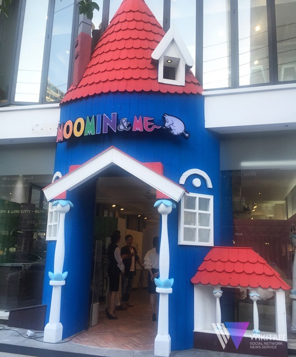
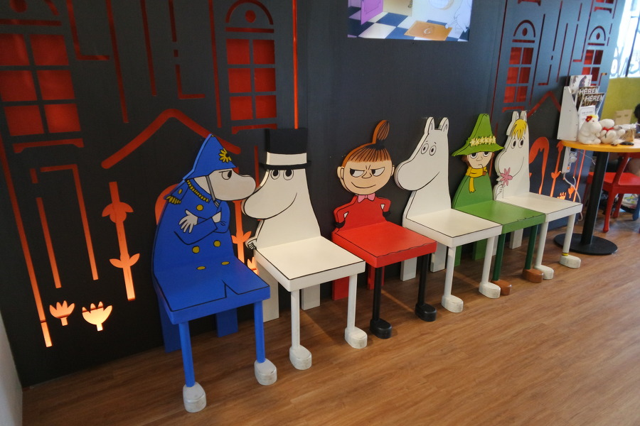

무민카페나 무민샵 같이 캐릭터를 좋아하는 사람들이 가면 좋아할만한 장소가 서울 몇몇 곳에 위치한다.
카페 무민앤미
 
위치: 서울특별시 강남구 신사동 663-1
영업시간: 11:00 ~ 21:00
인테리어 하나하나 다 캐릭터를 반영해서 디자인 했고, 커피를 시키면 라떼아트로 무민 캐릭터를 그려주기도 한다. 무민앤미는 커피를 마시는 것 뿐만이 아니라 관련 상품들도 살 수 있는 곳이 마련되어 있다.